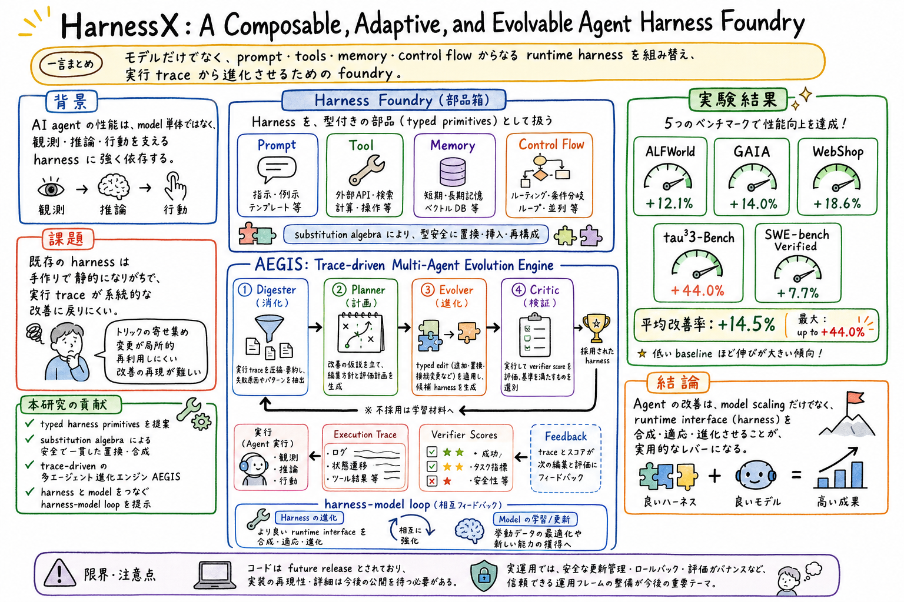

prompt、tool、memory、controller などを、型つきの構成要素として扱い、組み替え可能な harness vocabulary にする。

この論文の何がいいか
この論文は、個人 AI assistant や coding agent の改善を、モデル選びではなく harness design として捉え直す材料になる。prompt、tools、memory、approval、logging、verification、workflow を、ばらばらの設定ではなく一つの実行環境として評価できる。
特に、実行 trace を改善に戻す設計が重要である。日次 job、skill、wiki、article-page-publisher のような運用も、失敗ログを読んで手順を追記するだけではなく、候補 edit を作り、検証し、採用または却下する loop として扱える。
ゆうきさんの関心に引きつけるなら、HarnessX は『agent harness をどう育てるか』の概念モデルとして強い。skill の更新、memory の参照順、tool surface の切り方、サブエージェントの役割分担を、trace-driven に変えていく足場になる。
どんな論文か
AI agent の性能は、モデルそのものだけでは決まらない。モデルが何を観測し、どんな道具を使い、どの記憶を参照し、どの制御フローで行動するかを決める runtime harness が、実際の振る舞いを大きく左右する。
HarnessX の問題意識は、現在の harness が手作りで静的になりがちな点にある。新しい model や task ごとに scaffolding を組み直す必要があり、実行中に生まれる rich traces が系統的な改善へ戻りにくい。
この論文は、harness を composable primitives の集合として扱う。prompt、tool、memory、controller などの typed harness primitives を substitution algebra で組み替え、trace-driven multi-agent evolution engine の AEGIS で候補 harness を生成・評価する。
読みどころは、harness configuration を状態、typed edit を行動、execution traces と verifier scores を feedback とみなす対応づけである。これは、agent harness の改善を reinforcement learning 的な閉ループとして見るための言葉になる。
結果として、ALFWorld、GAIA、WebShop、tau^3-Bench、SWE-bench Verified の5ベンチで平均 +14.5%、最大 +44.0% の改善を報告している。低い baseline ほど伸びが大きいという観察も、harness 側の改善余地を示す。
HarnessX は、AI agent の runtime harness を composable、adaptive、evolvable にするための foundry を提案する論文である。
ここでいう harness は、prompt、tools、memory、control flow など、モデルが観測・推論・行動するための外部構造を指す。モデルの能力をどう引き出すかを決める実行環境に近い。
論文の中心主張は、agent progress は model scaling だけでなく、execution feedback から runtime interface を組み替えることでも進む、というもの。
課題と貢献
既存 harness の一部を、安全に差し替えたり、組み合わせたりするための形式的な編集操作を導入する。
実行 trace を読み、改善計画を立て、候補 harness edit を生成し、critic が評価する trace-driven multi-agent evolution engine を提示する。
trajectory を harness updates と model training signal の両方へ戻し、runtime interface と model 側の改善をつなぐ。
手法のしくみ
1
入力は、既存の agent harness、実行 trajectories、task feedback、verifier scores である。HarnessX はまず実行ログから失敗や改善余地を読む。
2
Harness configuration は状態として扱われる。つまり、prompt、tool set、memory access、control flow の組み合わせが、今の agent が動く環境の状態になる。
3
Typed edit は行動として扱われる。たとえば memory の使い方を変える、tool 呼び出しの順序を変える、verification step を追加する、といった編集が候補 action になる。
4
AEGIS は複数の役割に分かれる。Digester が trace を圧縮し、Planner が改善方針を立て、Evolver が harness edit を作り、Critic が verifier signal や制約に照らして評価する。
5
採用された edit は次の harness に反映される。これにより、harness は一度作って終わりではなく、実行 feedback を受けて更新される runtime interface になる。
6
さらに、trajectory は model training signal としても使われる。harness update と model update を切り離さず、相互に補完する loop として設計している。
検証結果
論文は、ALFWorld、GAIA、WebShop、tau^3-Bench、SWE-bench Verified の5つの benchmark で評価している。
報告値では、HarnessX は平均 +14.5% の改善を示し、最大では +44.0% の改善が出ている。
これは、モデルそのものより、観測、道具、記憶、検証、制御の組み方に改善余地が残っていることを示唆する。
この結果は、agent 改善を model scaling だけに寄せず、runtime interface を合成・適応・進化させる方向にも実用的なレバーがあることを示している。
課題と議論
論文ページでは code が future release とされているため、現時点では実装の詳細再現性や運用コストは追加確認が必要である。
harness を自動更新する場合、安全な採用条件、rollback、監査ログ、変更差分の説明可能性が重要になる。
trace-driven evolution は強力だが、trace に含まれる private skill、secret、手順知識の保護も同時に設計する必要がある。
すべての task で harness を大きく変えればよいわけではない。更新対象、検証粒度、固定しておくべき境界を決める運用設計が必要になる。
次に読むなら
- まず Abstract と Introduction を読む。model scaling ではなく runtime interface を進化させるという問題設定を押さえる。
- 次に HarnessX overview と AEGIS の節を読む。Digester、Planner、Evolver、Critic が trace をどう harness edit に変えるかを見る。
- 実務に引くなら、Codex skill や scheduled-ops の実行ログを、どの typed edit に変換できるか考えながら読む。
- 関連して読むなら、Recursive Agent Harnesses、Code as Agent Harness、SkillOpt、RedAct を並べると、harness の再帰、実行基盤、skill 更新、trace protection がつながる。
読後Q&A
この論文の中心問いは？
AI agent の性能を、モデル単体ではなく runtime harness の構成・適応・進化によってどう改善するか。
runtime harness とは何？
prompt、tools、memory、control flow など、モデルが観測し、考え、行動するための外部構造のこと。
HarnessX は何を新しくする？
harness を typed primitives として組み替え可能にし、実行 trace から候補 edit を生成・評価・採用する foundry として扱う。
AEGIS は何をする？
trace を読み、改善計画を作り、harness edit を生成し、critic が検証 signal に照らして評価する trace-driven multi-agent evolution engine。
substitution algebra は何に効く？
prompt、tool、memory、controller などの harness 部品を、場当たり的ではなく型つきの編集操作として差し替えるために効く。
実験では何を示している？
ALFWorld、GAIA、WebShop、tau^3-Bench、SWE-bench Verified で平均 +14.5%、最大 +44.0% の改善を報告している。
なぜ baseline が低い環境で伸びる？
モデル能力だけでなく、観測、道具、記憶、検証、制御の組み方に未回収の改善余地が大きい可能性があるため。
個人 assistant 運用にどう効く？
skill、wiki、scheduled job、article publisher を、固定手順ではなく trace から改善される harness として見直せる。
注意点は？
自動 harness 更新には、安全な採用条件、rollback、監査、変更差分の説明可能性、trace 内の private skill 保護が必要になる。
次に読むなら何？
Recursive Agent Harnesses、Code as Agent Harness、SkillOpt、RedAct を並べると、harness の再帰、実行基盤、skill 更新、trace protection がつながる。